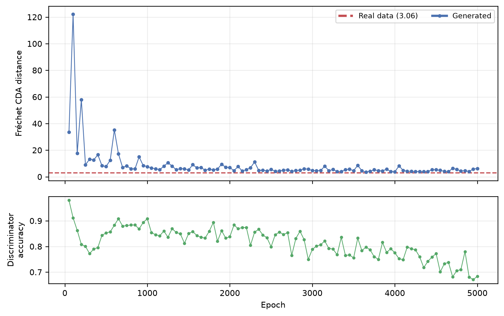
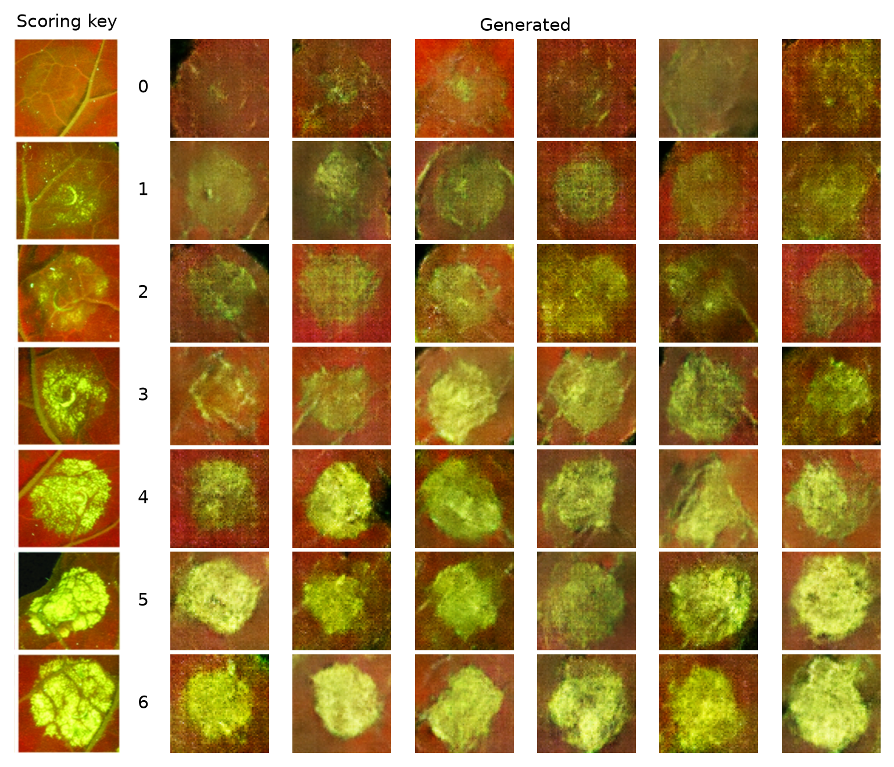
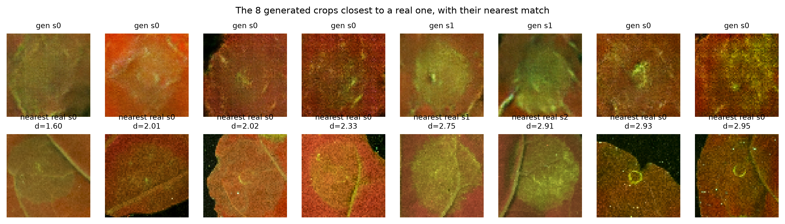
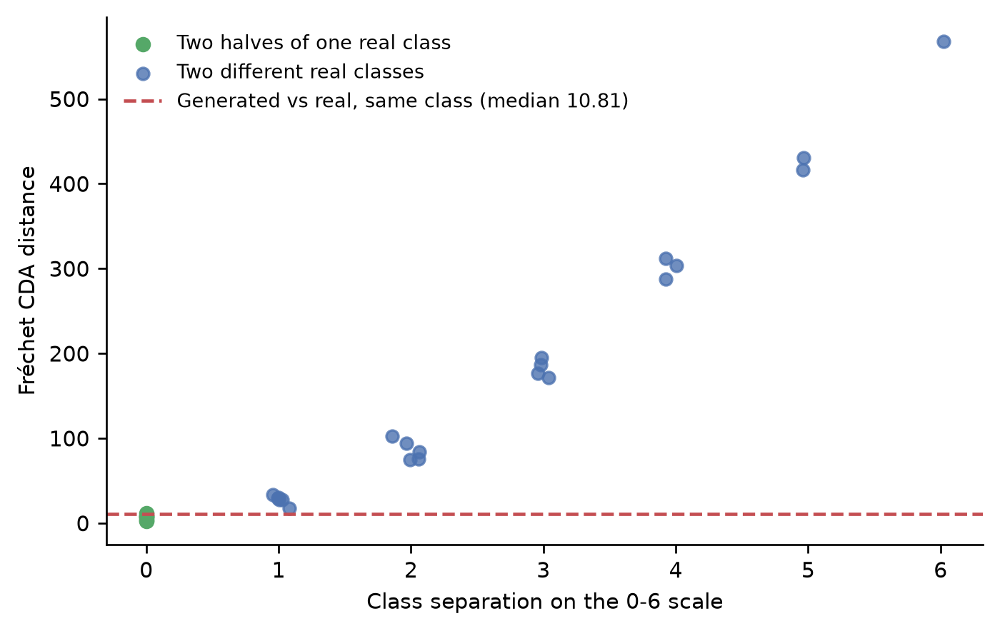

Is the cGAN any good? Training curves, samples, and a real-data reference
Date: 10/09/2026
What this is for
models/06_Medoid_CGAN trained 64 conditional GANs and recorded one number each, the best Fréchet CDA distance. That number on its own cannot say whether a generator is good, because there is nothing to compare it against and because it is a minimum over 100 noisy evaluations rather than a typical value. This document supplies the missing pieces: the training curves the run did not plot, a real-data reference for the distance, and the generated crops side by side with real ones.
Code
# 1import sys, glob, warningsfrom pathlib import Pathimport numpy as np, pandas as pd, tensorflow as tfimport matplotlib.pyplot as pltwarnings.filterwarnings("ignore")repo_root =next(p for p in Path.cwd().parents if (p /".git").exists())sys.path.insert(0, str(repo_root /"src"))import base_dataset, cgan # noqa: E402RUN = repo_root /"models/06_Medoid_CGAN/01_Conditional"CNN = repo_root /"models/03_Medoid_CNN_RandomSearch/01_Categorical_Loss"plt.rcParams.update({"figure.dpi": 120, "font.size": 9})res = pd.read_csv(RUN /"cgan_results.csv")BEST =int(res.nsmallest(1, "best_fcd").slurm_array.iloc[0])hist = pd.read_csv(RUN /f"array_task{BEST}/history_{BEST}.csv")fcd_pts = hist[hist.fcd.notna()]print(f"64 configs; best is config {BEST} at Frechet {res.best_fcd.min():.3f}")print(f"its history: {len(hist)} epochs, {len(fcd_pts)} Frechet evaluations "f"(one every 50 epochs)")
2026-09-11 22:46:15.078617: I tensorflow/core/platform/cpu_feature_guard.cc:210] This TensorFlow binary is optimized to use available CPU instructions in performance-critical operations.
To enable the following instructions: AVX2 FMA, in other operations, rebuild TensorFlow with the appropriate compiler flags.
64 configs; best is config 48 at Frechet 3.659
its history: 5000 epochs, 100 Frechet evaluations (one every 50 epochs)
1. The real-data reference
The Fréchet distance has no absolute scale, so the only way to read it is against what real data scores. Two reference points, both computed with the same sample size the training loop used — cgan.sample(n_per_class=64) returns 64 images per class, so 448, not 64:
Real held-out sample. 448 real training crops scored against the 455 validation crops. This is the floor a perfect generator would reach: two disjoint samples of genuine leaves, differing only by sampling noise.
Perfect memorisation. 448 crops drawn from the validation set itself. A generator that had memorised its training data and reproduced it exactly would score near this.
Code
# 2CACHE = Path("reference.npz")ds = base_dataset.load_dataset(repo_root /"data/datasets/medoid_64/medoid_64.npy")val = np.asarray(ds["val_images"], dtype="float32")tr = np.asarray(ds["train_images"], dtype="float32")yr = np.asarray(ds["train_labels"]).astype(int)best_cnn =int(pd.read_csv(CNN /"random_search_results.csv") .sort_values("avg_vaf", ascending=False).iloc[0].model_id)fcd = cgan.FrechetCDADistance(glob.glob(str(CNN /f"results/*_{best_cnn}/model.keras"))[0])gen = tf.keras.models.load_model(RUN /f"array_task{BEST}/models/generator_best.keras")LATENT =int(pd.read_csv(RUN /"cgan_results.csv") .query("slurm_array == @BEST").latent_dim.iloc[0])if CACHE.exists(): z = np.load(CACHE); real_ref, memo_ref, ckpt = z["real"], z["memo"], z["ckpt"]else: rng = np.random.default_rng(0) draw =lambda pool, n: pool[rng.choice(len(pool), n, replace=False)] real_ref = np.array([fcd(val, draw(tr, 448)) for _ inrange(15)]) memo_ref = np.array([fcd(val, draw(val, 448)) for _ inrange(15)])# The saved checkpoint, re-evaluated on 15 fresh latent draws. If its recorded score# was a lucky evaluation rather than a genuinely better generator, these will sit at# the plateau mean instead of near the recorded value. ckpt = np.array([fcd(val, cgan.sample(gen, LATENT, 64, seed=s)[0]) for s inrange(15)]) np.savez(CACHE, real=real_ref, memo=memo_ref, ckpt=ckpt)print(pd.DataFrame({"median": [np.median(real_ref), np.median(memo_ref), np.median(ckpt)],"min": [real_ref.min(), memo_ref.min(), ckpt.min()],"max": [real_ref.max(), memo_ref.max(), ckpt.max()],}, index=["448 real train crops", "448 crops from val (memorisation)",f"config {BEST} checkpoint"]).round(3).to_string())print(f"\nrecorded best_fcd for config {BEST}: {res.best_fcd.min():.3f}")
median min max
448 real train crops 3.065 2.705 3.597
448 crops from val (memorisation) 0.032 0.013 0.052
config 48 checkpoint 3.896 3.727 4.142
recorded best_fcd for config 48: 3.659
2. The training curves
Code
# 3plateau = fcd_pts[fcd_pts.epoch >3000].fcd# Two rows, not three. The per-epoch generator and discriminator losses were dropped: no# statement in this analysis or in the chapter rests on them, and the discriminator# accuracy below already reports how the two are faring against each other.fig, ax = plt.subplots(2, 1, figsize=(9, 5.6), sharex=True, gridspec_kw={"height_ratios": [2, 1], "hspace": 0.12})ax[0].axhline(np.median(real_ref), color="#C44E52", ls="--", lw=1.3, zorder=2, label=f"Real data ({np.median(real_ref):.2f})")ax[0].plot(fcd_pts.epoch, fcd_pts.fcd, "o-", ms=3, lw=0.9, color="#4C72B0", zorder=3, label="Generated")b = res.query("slurm_array == @BEST").iloc[0] # used by the summary print belowax[0].set_ylabel("Fréchet CDA distance")# One point per EVALUATION, not per epoch: --fcd_every is 50, so the distance exists at 100# of the 5,000 epochs.# A label drawn on the line itself sat on top of the data, so both series are named in a# legend instead._l0 = ax[0].legend(fontsize=8, ncol=2, loc="upper right")for _h in _l0.get_lines(): _h.set_linewidth(2.5)ax[1].plot(fcd_pts.epoch, fcd_pts.disc_acc, "o-", ms=2.5, lw=0.8, color="#55A868")ax[1].set_ylabel("Discriminator\naccuracy"); ax[1].set_xlabel("Epoch")for a in ax: a.grid(alpha=0.25)fig.tight_layout()from pathlib import Path as _P_tp = _P("thesis_plots"); _tp.mkdir(exist_ok=True)fig.savefig(_tp /"cgan_training_curve.png", dpi=300, bbox_inches="tight")plt.show()sl = np.polyfit(fcd_pts[fcd_pts.epoch >3000].epoch, plateau, 1)[0] *1000print(f"after epoch 3000: mean {plateau.mean():.3f}, sd {plateau.std():.3f}, "f"trend {sl:+.3f} per 1000 epochs")print(f"saved checkpoint value {b.best_fcd:.3f} is "f"{(plateau.mean() - b.best_fcd) / plateau.std():.2f} sd below that mean")

after epoch 3000: mean 4.949, sd 1.211, trend -0.184 per 1000 epochs
saved checkpoint value 3.659 is 1.06 sd below that mean
3. Were the other top configs still improving?
Code
# 4rows = []for a in res.nsmallest(6, "best_fcd").slurm_array.astype(int): h = pd.read_csv(RUN /f"array_task{a}/history_{a}.csv") f = h[h.fcd.notna()] late = f[f.epoch >3000] rows.append({"config": a,"best_fcd": float(res.query("slurm_array == @a").best_fcd.iloc[0]),"mean 3-4k": f[(f.epoch >3000) & (f.epoch <=4000)].fcd.mean(),"mean 4-5k": f[f.epoch >4000].fcd.mean(),"sd after 3k": late.fcd.std(),"trend /1000 ep": np.polyfit(late.epoch, late.fcd, 1)[0] *1000})print(pd.DataFrame(rows).round(3).to_string(index=False))print(f"\nreal-data reference: {np.median(real_ref):.3f} "f"({real_ref.min():.3f}-{real_ref.max():.3f})")
# 5Xg, yg = cgan.sample(gen, LATENT, 8, seed=1)rng = np.random.default_rng(3)rgb =lambda im: np.clip(im[:, :, ::-1], 0, 1) # arrays are BGR (cv.imread), display RGB# The reference column is the CDAScorer scoring key (data/scoring_key/cdascorer_key.jpg),# the same key the scores were assigned against, rather than randomly drawn real crops.import matplotlib.image as _mpimg# The key is a 7-class photo strip with the score digits printed above it and a white page# margin all round. Both are found from the image rather than hard-coded: the strip is the# band of rows that is non-white across more than 80% of the width, and its columns are# found the same way, which removes the thin orange edge the fixed 190:553 crop left in._raw = _mpimg.imread(str(repo_root /"data/scoring_key/cdascorer_key.jpg"))[:, :, :3]_nw = _raw.min(2) <235_rb = np.where(_nw.sum(1) >0.8* _raw.shape[1])[0]_strip = _nw[_rb.min():_rb.max() +1]_cb = np.where(_strip.sum(0) >0.8* _strip.shape[0])[0]_key = _raw[_rb.min():_rb.max() +1, _cb.min():_cb.max() +1]# 2,740 px over 7 classes is not an integer, so the edges are taken as floats and rounded# per class; a floor division drifts by up to 4 px by the last class._edge = [int(round(i * _key.shape[1] /7)) for i inrange(8)]_ka = _key.shape[0] / (_key.shape[1] /7) # one key cell is slightly taller than wideN_GEN =6rng = np.random.default_rng(3)# Generated crops are 64x64 and key cells are ~391x365, so nothing is drawn with# aspect="auto"; the row height is set from the key cell and the crops keep square pixels.fig, axes = plt.subplots(7, N_GEN +2, figsize=(1.02* (N_GEN +2), 1.02*7* _ka), gridspec_kw={"width_ratios": [1, 0.22] + [1] * N_GEN,"hspace": 0.04, "wspace": 0.04})for s_ inrange(7): axes[s_, 0].imshow(_key[:, _edge[s_]:_edge[s_ +1]]) axes[s_, 1].text(0.5, 0.5, str(s_), ha="center", va="center", fontsize=9, transform=axes[s_, 1].transAxes)for j_, i_ inenumerate(rng.choice(np.where(yg == s_)[0], N_GEN, replace=False)): axes[s_, 2+ j_].imshow(np.clip(Xg[i_][:, :, ::-1], 0, 1))for a_ in axes.ravel(): a_.axis("off")axes[0, 0].set_title("Scoring key", fontsize=9)# Centred over the span of the six generated columns, not over one of them._x0 = axes[0, 2].get_position().x0_x1 = axes[0, 1+ N_GEN].get_position().x1_yt = axes[0, 0].get_position().y1fig.text((_x0 + _x1) /2, _yt +0.004, "Generated", ha="center", va="bottom", fontsize=9)fig.savefig(_P("thesis_plots") /"cgan_real_vs_generated.png", dpi=300, bbox_inches="tight")plt.show()

5. Is it copying its training data?
For each generated crop, the closest real training crop in the CNN feature space, against how close real crops are to each other. A generator reproducing its training set would sit at or below the real-to-real distance.
Code
# 6def feats(x): f = fcd.model.predict(x, batch_size=128, verbose=0)return f.reshape(len(f), -1)Fg, Ft = feats(Xg), feats(tr)D = np.linalg.norm(Fg[:, None, :] - Ft[None, :, :], axis=2)nn_gen = D.min(1)Dr = np.linalg.norm(Ft[:, None, :] - Ft[None, :, :], axis=2)np.fill_diagonal(Dr, np.inf)nn_real = Dr.min(1)print(f"generated crop -> nearest real crop: median {np.median(nn_gen):.3f}")print(f"real crop -> nearest other real: median {np.median(nn_real):.3f}")print(f"ratio {np.median(nn_gen) / np.median(nn_real):.2f}x")fig, axes = plt.subplots(2, 8, figsize=(12, 3.4))for k, gi inenumerate(np.argsort(nn_gen)[:8]): # the 8 closest to a real crop axes[0, k].imshow(rgb(Xg[gi])); axes[0, k].set_title(f"gen s{yg[gi]}", fontsize=8) axes[1, k].imshow(rgb(tr[D[gi].argmin()])) axes[1, k].set_title(f"nearest real s{yr[D[gi].argmin()]}\nd={nn_gen[gi]:.2f}", fontsize=8)for a in axes.ravel(): a.axis("off")fig.suptitle("The 8 generated crops closest to a real one, with their nearest match", fontsize=10)fig.tight_layout()plt.show()
generated crop -> nearest real crop: median 4.630
real crop -> nearest other real: median 4.285
ratio 1.08x

6. Testing four specific complaints about the samples
Looking at the grid above, four things stand out as wrong. Each is measurable, and two of them turn out not to be what is actually happening.
Code
# 7from scipy import ndimageimport cv2 as cvXg2, _ = cgan.sample(gen, LATENT, 60, seed=5)rr = np.random.default_rng(0)R, Gn = tr[rr.choice(len(tr), len(Xg2), replace=False)], Xg2print(f"{len(R)} real vs {len(Gn)} generated crops")sys.path.insert(0, str(repo_root /"analyses/07_gan_diversity"))import chapter2_features as c2 # noqa: E402def dark_frac(X):"""Fraction of near-black pixels: the off-leaf background a bounding box picks up when it overhangs the edge of the leaf."""return np.array([np.mean(x.mean(2) <0.15) for x in X])def lesion_geometry(X):"""Where the lesion sits and how big it is, from the same Otsu segmentation the Chapter 2 features use.""" off, ar = [], []for x in X: leaf, cda = c2.segment_cda(x) m = cda & leaf ar.append(m.sum() /max(leaf.sum(), 1))if m.sum() <10: off.append(np.nan);continue cy, cx = ndimage.center_of_mass(m) off.append(np.hypot(cy -31.5, cx -31.5) /32) # in half-widthsreturn np.array(off), np.array(ar)def ridges(X):"""Veins are LONG CONNECTED ridges. Scattered vein-like texture has the same edge energy but breaks into many small rounder pieces, so measure connectivity and elongation rather than edge energy alone.""" frac, elong, n_comp, energy = [], [], [], []for x in X: g = (x.mean(2) *255).astype(np.uint8) energy.append(np.abs(ndimage.laplace(x.mean(2))).mean()) th = cv.morphologyEx(g, cv.MORPH_BLACKHAT, cv.getStructuringElement(cv.MORPH_ELLIPSE, (7, 7))) m = th >max(8, np.percentile(th, 92)) lab, n = ndimage.label(m)if n ==0: frac.append(0); elong.append(1); n_comp.append(0);continue sizes = np.bincount(lab.ravel())[1:] ys, xs = np.where(lab ==int(np.argmax(sizes)) +1)iflen(ys) >3: ev = np.sort(np.linalg.eigvalsh(np.cov(np.vstack([ys, xs])))) elong.append(np.sqrt(ev[1] /max(ev[0], 1e-6)))else: elong.append(1.0) frac.append(sizes.max() / m.sum()); n_comp.append(n)return (np.array(frac), np.array(elong), np.array(n_comp), np.array(energy))dR, dG = dark_frac(R), dark_frac(Gn)oR, aR = lesion_geometry(R)oG, aG = lesion_geometry(Gn)fR, eR, nR, enR = ridges(R)fG, eG, nG, enG = ridges(Gn)print(pd.DataFrame({"real": [np.median(dR), np.mean(dR >0.05), np.mean(dR >0.10), np.nanmedian(oR), np.nanstd(oR), np.nanmedian(aR), np.nanstd(aR), np.median(enR), np.median(fR), np.median(eR), np.median(nR)],"generated": [np.median(dG), np.mean(dG >0.05), np.mean(dG >0.10), np.nanmedian(oG), np.nanstd(oG), np.nanmedian(aG), np.nanstd(aG), np.median(enG), np.median(fG), np.median(eG), np.median(nG)],}, index=["dark background, median fraction","crops with >5% dark background","crops with >10% dark background","lesion centroid offset from centre"," its spread (sd)","lesion area / leaf area"," its spread (sd)","edge energy (mean |Laplacian|)","largest ridge component / all ridge px","elongation of largest ridge component","number of separate ridge components"]).round(4).to_string())
420 real vs 420 generated crops
real generated
dark background, median fraction 0.0201 0.0037
crops with >5% dark background 0.3952 0.0952
crops with >10% dark background 0.2690 0.0167
lesion centroid offset from centre 0.1143 0.1152
its spread (sd) 0.0925 0.0869
lesion area / leaf area 0.4996 0.4980
its spread (sd) 0.1187 0.1156
edge energy (mean |Laplacian|) 0.1099 0.1203
largest ridge component / all ridge px 0.1109 0.0805
elongation of largest ridge component 2.4849 2.0917
number of separate ridge components 121.0000 144.0000
The background is missing, and this is the biggest single difference. A bounding box drawn round a lesion near the edge of a leaf picks up near-black background, and 39.5% of real crops have more than 5% such pixels against 9.5% of generated ones. Above 10% the gap is 26.9% against 1.7%. The generator has essentially learned that crops are filled edge to edge with leaf.
They are not, however, near-identical centred blobs. Lesion centroid offset from the crop centre is 0.114 of a half-width in real crops and 0.115 in generated ones, with spreads of 0.093 and 0.087; lesion area over leaf area is 0.500 against 0.498, spreads 0.119 and 0.116. Position and size are as varied as the real data. The impression of sameness comes from the uniform background, not from the lesion.
The vein-like marks are real texture in the wrong arrangement. Edge energy is if anything slightly higher in generated crops (0.120 against 0.110), so this is not a lack of detail. What differs is connectivity: the largest connected ridge holds 11.1% of ridge pixels in real crops against 8.0% in generated ones, its elongation is 2.49 against 2.09, and the marks break into 144 pieces against 121. The generator produces vein-like contrast but not vein-like runs.
Pipette ring damage: this measurement cannot answer it. A Hough circle transform finds 0.42 circles per real crop and 0.65 per generated one, which is the wrong direction, almost certainly because a roughly circular lesion boundary is itself a circle and the generated lesions are rounder. Separating ring damage from lesion outline needs annotation this dataset does not have, so nothing here supports or refutes the observation.
6.1 Is the range of appearances narrower than the real data?
The complaint is not that any one generated crop is wrong but that they all look alike. That is a statement about variance, not about medians, so it needs measuring that way: match the class counts exactly, then compare how much the two sets spread out.
real median real sd gen median gen sd
lesion circularity (1 = perfect circle) 0.668 0.169 0.695 0.135
lesion elongation (1 = round) 1.208 0.460 1.200 0.156
within-lesion brightness sd (texture) 0.079 0.031 0.087 0.028
Chapter 2 feature space (fixed arithmetic, nothing fitted to either set):
within-class spread real 2.459 generated 2.114 ratio 0.86x
nearest-neighbour dist real 1.202 generated 1.067 ratio 0.89x
The medians match and the variance is compressed. Median circularity is 0.668 real against 0.695 generated and median elongation 1.208 against 1.200, so a typical generated lesion is the right shape. The spreads are where they part: elongation has a standard deviation of 0.460 in real crops and 0.156 in generated ones, a threefold compression, and circularity 0.169 against 0.135. The generator has learned what an average lesion looks like and produces variations around it that are far narrower than the real range.
Overall diversity in the unfitted feature space is 0.86x the real value by within-class spread and 0.89x by nearest-neighbour distance. That is a real narrowing but a modest one, which is why the effect reads as sameness rather than as identical images: the eye is picking up the threefold compression in shape variety and the near-total absence of dark background, not a collapse to one output.
Within-lesion texture is not the problem. Median within-lesion brightness standard deviation is 0.079 real against 0.087 generated, so generated lesions are, if anything, slightly less smooth than real ones.
7. Frechet calibration against the ordinal scale
A Frechet distance has no units, so the generator’s 3.66 can only be read against distances measured the same way on real data. The calibration is the distance between REAL score classes: if two real classes one step apart sit at distance d, a generator whose crops sit at distance d from real crops of their own class is, in these terms, one score step wrong.
Every comparison uses 131 crops per side. The Frechet distance is strongly biased by sample size – the 64-crop version of the section 1 reference gave the opposite answer to the 448-crop one – so holding n fixed across every pair is what makes the ladder readable.
Code
# 7.1from pathlib import Path as _P2CAL = _P2("calibration.npz")if CAL.exists(): _z = np.load(CAL) pair_d, pair_gap, within_d, gen_d = _z["pair_d"], _z["pair_gap"], _z["within_d"], _z["gen_d"]else: NPC =131 _Xg2, _yg2 = cgan.sample(gen, LATENT, 60, seed=5) by_class = {c: tr[yr == c] for c inrange(7)} gen_class = {c: _Xg2[_yg2 == c] for c inrange(7)} pair_d, pair_gap = [], []for a inrange(7):for b inrange(a +1, 7): pair_d.append(fcd(by_class[a][:NPC], by_class[b][:NPC])) pair_gap.append(b - a) within_d = [fcd(by_class[c][:NPC], by_class[c][NPC:2* NPC]) for c inrange(7)] gen_d = [fcd(by_class[c][:NPC], gen_class[c][:NPC]) for c inrange(7)] pair_d, pair_gap = np.array(pair_d), np.array(pair_gap) within_d, gen_d = np.array(within_d), np.array(gen_d) np.savez(CAL, pair_d=pair_d, pair_gap=pair_gap, within_d=within_d, gen_d=gen_d)fig, ax = plt.subplots(figsize=(6.6, 4.0))ax.scatter(np.zeros(len(within_d)), within_d, s=30, color="#55A868", label="Two halves of one real class")ax.scatter(pair_gap + np.random.default_rng(0).normal(0, 0.06, len(pair_gap)), pair_d, s=26, color="#4C72B0", alpha=0.8, label="Two different real classes")# Named in the legend rather than written along the line, which put text over the data.ax.axhline(np.median(gen_d), color="#C44E52", ls="--", lw=1.4, label=f"Generated vs real, same class (median {np.median(gen_d):.2f})")ax.set_xlabel("Class separation on the 0-6 scale")ax.set_ylabel("Fréchet CDA distance")ax.set_xticks(range(7))ax.legend(fontsize=8, frameon=False, loc="upper left")ax.spines[["top", "right"]].set_visible(False)fig.savefig(_P2("thesis_plots") /"frechet_calibration.png", dpi=300, bbox_inches="tight")plt.show()for g inrange(1, 7): m = pair_gap == gprint(f" {g} score step{'s'if g >1else' '}: median {np.median(pair_d[m]):6.2f} (n={m.sum()} pairs)")print(f" same class, two halves: median {np.median(within_d):6.2f}")print(f" generated vs own class: median {np.median(gen_d):6.2f}")

Frechet CDA distance between real score classes against their separation on the 0-6 scale, with the generator’s distance from real crops of its own class marked.
1 score step : median 28.44 (n=6 pairs)
2 score steps: median 84.40 (n=5 pairs)
3 score steps: median 181.67 (n=4 pairs)
4 score steps: median 303.40 (n=3 pairs)
5 score steps: median 423.59 (n=2 pairs)
6 score steps: median 568.18 (n=1 pairs)
same class, two halves: median 7.27
generated vs own class: median 10.81
8. What this says
The generator is close to real data but not inside it. Re-evaluated on 15 fresh latent draws the saved checkpoint scores 3.727-4.142, against 2.705-3.597 for a real held-out sample of the same size. The two ranges do not overlap, so the gap is real rather than sampling noise, but it is small – roughly a quarter of the way from real data to nothing.
The saved checkpoint is genuinely better than a typical epoch, not a lucky evaluation. This mattered because best_fcd is a minimum over 100 noisy evaluations, and the plateau after epoch 3000 has a standard deviation of 1.21, so the minimum of 100 draws would sit well below the mean by chance alone. The check is the re-evaluation above: if the recorded 3.659 had been luck, fresh draws would return to the plateau mean of 4.949. They return 3.896, so the epoch-selection rule picked a real improvement.
The epoch cap did not bind: config 48 is flat from about epoch 2,000. Measuring the trend from successively later start points gives -0.61, -0.57, -0.33, -0.06 and -0.18 per 1,000 epochs from epochs 1,000, 1,500, 2,000, 2,500 and 3,000, against a point-to-point standard deviation of 1.1 to 1.6 throughout. From epoch 2,000 the fitted decline over the remaining 3,000 epochs is about 1.0, smaller than the noise between consecutive evaluations, so it is not distinguishable from flat. Of the top six configs only 42 has a trend clearly larger than its own noise. Training longer is not the lever.
Nothing is memorising. Each generated crop’s nearest real training crop sits at 4.630 against 4.285 for real-to-real nearest neighbours, a ratio of 1.08. Generated crops are slightly further from real ones than real ones are from each other, which is the opposite of copying. The Fréchet distance cannot see this on its own – perfect memorisation scores 0.032 on it, thirty times better than the real-data reference – so it had to be checked separately.
What the samples get wrong is the range of appearances, not the average one. The lesion grows and yellows correctly from score 0 to 6, so the conditioning works, and a typical generated lesion has the right position, size, circularity and internal texture. What has gone is the tail of the distribution: elongation varies threefold less than in real crops, and the dark off-leaf background that appears in 39.5% of real crops appears in 9.5% of generated ones. Section 6 measures each of these. A classifier trained on this data would never see a lesion running off the edge of a leaf, and never see a long thin one.
The one hyperparameter that separated. All ten best configs used lr_ratio_d = 4.0, the discriminator running at four times the generator’s learning rate. Mean Fréchet distance is 4.71 at that setting against 13.27 at 1.0. Nothing else – beta_1, dropout, label smoothing, generator width – separates as cleanly, which is worth reporting given that the original grid held this axis fixed at 1.0 and so could not have found it.